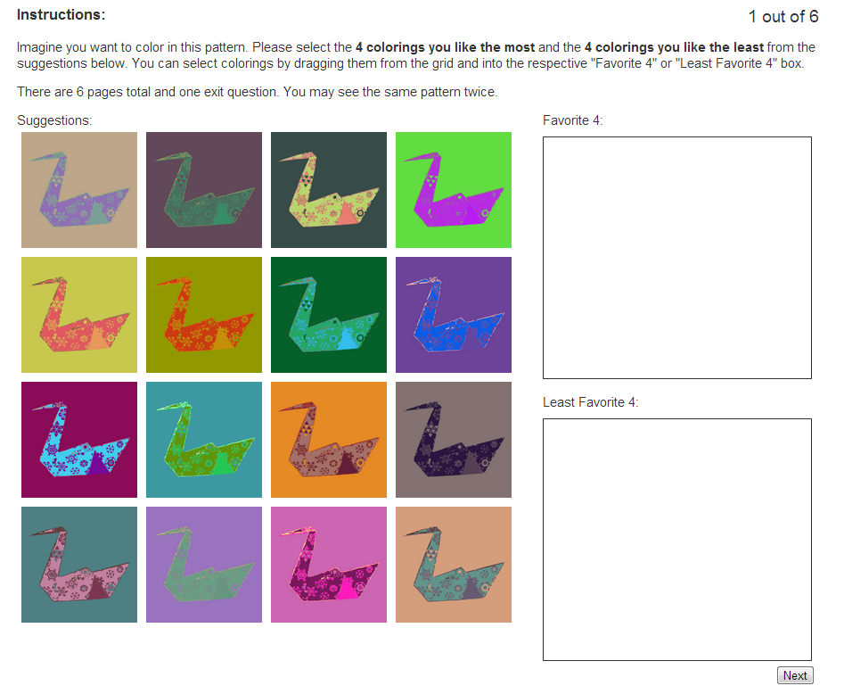

The dataset csv file contains a list of the top 82 artists ordered by their most popular pattern. The columns in this file are the artist name, the pattern id, a link to the pattern preview image, the list of colors used in the pattern in hex, and the pattern template id.
Our model was trained on the ten most popular artists with 100 or more patterns on the COLOURLovers website, sorting artists according to their most popular pattern. The ordered list of artists can be found in the artist csv file. After excluding those pattern templates reserved for figures and experiments, 913 meshes were used for training.
The factor weights for the final learned model are given below, trained using the method described in the paper.
Unary Lightness : 0.3916957890631309
Unary Colorfulness : 0.6072022699230435
Unary Name Saliency : 0.2190458199016895
Unary ColorNames Conditional : 0.9450151466013615
Binary Perceptual Difference : 1.4335314502402619
Binary Chroma Difference : 0.44573826463578836
Binary Relative Colorfulness : 0.9043698496119056
Binary Relative Lightness : 0.4741491895465859
Binary Name Similarity : 8.075933288759014E-5
Group Lightness : 0.5489524055385332
Group Colorfulness : 0.6634808102466225
Group Name Saliency : 0.17540703784055933
Group ColorNames Conditional : 1.1052226383066204
Color Compatibility : 1.2229857384516578
Here is the interface shown to participants in our perceptual evaluation. Participants drag their favorite and least favorite 4 patterns from the grid of suggestions to the respective answer boxes.

All the patterns and suggestions used in the study are shown here, along with the number of times a suggesion was selected as a top 4 or bottom 4 coloring: Evaluation results per pattern suggestion
The datasets used for our style capture experiments can be found in the style html file.